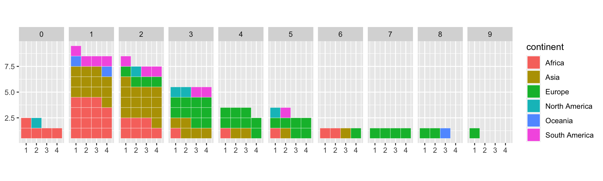
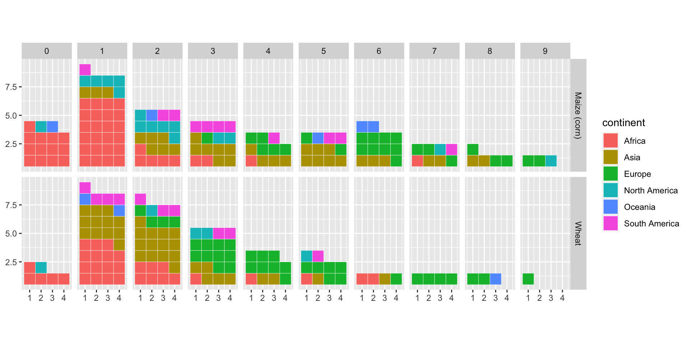
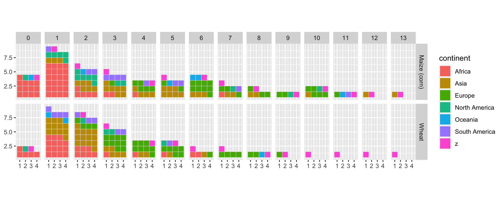
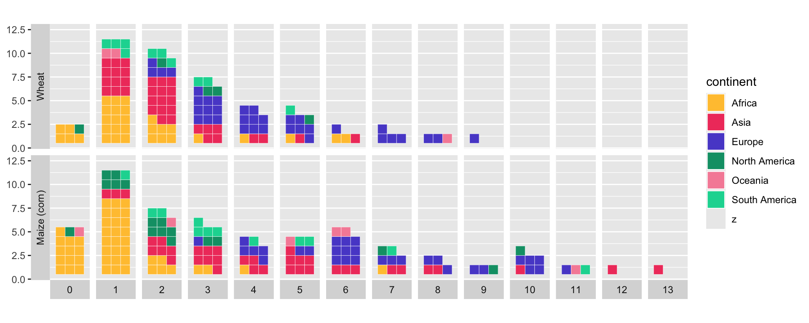
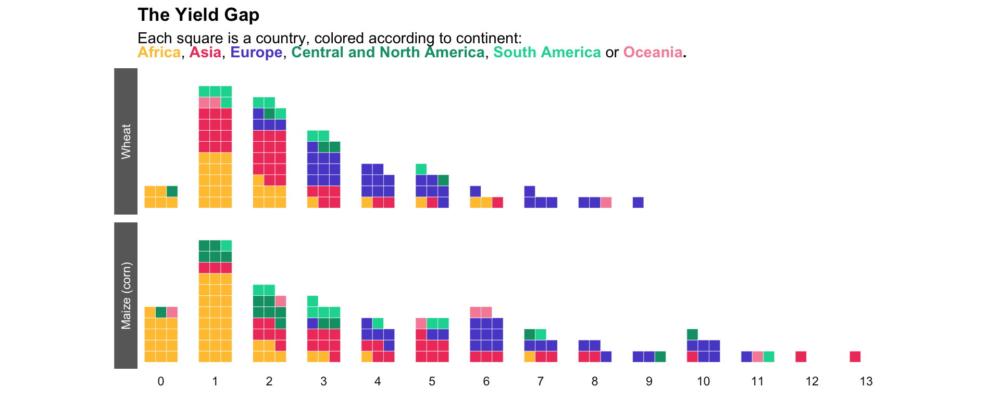

About
This chart, and its step-by-step guide, has been realised by
Benjamin Nowak. Thanks to
him for sharing this content!
As a teaser, here is the chart we are going to build:
Load packages and data
In R, waffle charts may be created with the
{waffle} package. In addition to this
library, we will load several packages that we will need for this
tutorial:
library(tidyverse)
library(waffle)
library(ggtext)
library(rnaturalearth)
library(sf)
But what data are we going to represent? End of suspense, the graph
shows average national wheat and corn yields for the
period 2010 to 2020. These data have been downloaded from
FAOSTAT.
data <- read_csv('https://raw.githubusercontent.com/BjnNowak/book/main/data/wheat_maize_2010_2020.csv')
Compute mean yields for the period
The great advantage of FAOSTAT data tables is that
they are always formatted in the same way. So, once you’re used to
them, it’s easy to find your way around. What’s more, these tables are
in long format, making them easy to process with the
tidyverse.
About the columns we’ll be using here:
-
the country code is stored in the
Area Code (M49) column
-
the Item column indicates the
type of crop (wheat or maize here)
-
the Value column gives the
value of the variable of interest (here, yield)
The average yield over the period is therefore calculated as follows:
clean<-data%>%
dplyr::rename(M49 = 'Area Code (M49)')%>%
drop_na(Value)%>%
group_by(M49, Item)%>%
summarize(yield=mean(Value)/10000)%>%
ungroup()
We’re now going to
assign a continent to each country. To do this, we’ll
use the world map available in the
{rnaturalearth} package, keeping only the attribute table
and ignoring the geometry.
The join will be based on the
United Nations codes (column M49 in our
data table, column un_a3 in the
{rnaturalearth} table).
wrld <- ne_countries(type = "countries", scale = "small", returnclass = "sf")%>%
st_drop_geometry()
clean <- clean%>%
left_join(wrld,by=c('M49'='un_a3'))%>%
select(M49,Item,yield,continent)%>%
drop_na(continent)
Make waffle chart for wheat
To create our waffle charts, we need to (i)
create yield classes and (ii) count the
number of countries in each class (with a different
count for each continent).
This is done as follows:
clean <- clean %>%
mutate(
rd=floor(yield),
ct=1
) %>%
group_by(rd, Item, continent)%>%
summarize(
n=sum(ct)
) %>%
ungroup()
We’re now ready to create our first distribution curve plotted as a
waffle chart! But to make things easier, we’ll start with
wheat only.
With {waffle}, waffle charts are created with
geom_waffle().
With this function, there’s one important thing to know: the yield
classes here must be
added as successive graphs (facets), not simply as
classes on the x-axis.
ggplot(
# Keep only data for wheat
clean%>%filter(Item=="Wheat"),
aes(values=n, fill=continent)
)+
waffle::geom_waffle(
n_rows = 4, # Number of squares in each row
color = "white", # Border color
flip = TRUE, na.rm=TRUE
)+
facet_grid(~rd)+
coord_equal()

Note that the x-axis and y-axis values don’t correspond to anything
significant here (we’ll remove them later). Only the
facet titles are important (0 for countries with yields from 0 to 1
ton, etc.).
Make waffle chart for both crops
We’re now going to present the values
for the two crops, wheat and maize, simultaneously
but keeping only the yields below 10 tons.
ggplot(
clean%>%filter(rd<10),
aes(values=n, fill=continent)
)+
waffle::geom_waffle(
n_rows = 4, # Number of squares in each row
color = "white", # Border color
flip = TRUE, na.rm=TRUE
)+
# Add Item in facet_grid
facet_grid(Item~rd)+
coord_equal()

If you try to remove the filter on the yield, you’ll see that R
returns an error message. What’s the problem?
Because, unlike corn, wheat doesn’t have a country with a mean yield
above 10 tons. The corresponding facets cannot be represented with
ggplot().
The workaround? Create an imaginary continent that
can be present for all combinations, but which we’ll then make
disappear in the color palettes!
This is how we will proceed:
cpl<-clean%>%
# Removing some countries with unrealistic yield for maize
filter(rd<14)%>%
# Complete all combinations for real continents, but with 0 value
# (this prevents cases from being created during the 2nd application of the function)
complete(
rd,Item,continent,
fill=list(n=0)
)%>%
# Add imaginary 'z' continent
add_row(continent='z',Item='Wheat',n=0,rd=1)%>%
# Complete all combination for the 'z' continente
complete(
rd,Item,continent,
fill=list(n=1)
)
We can now plot the data without filter.
ggplot(
cpl, # Use cpl (complete) tibble
aes(values=n, fill=continent)
)+
waffle::geom_waffle(
n_rows = 4, # Number of squares in each row
color = "white", # Border color
flip = TRUE, na.rm=TRUE
)+
# Add Item in facet_grid
facet_grid(Item~rd)+
coord_equal()

Plot customization
We now have some work to do to customize the graph ! First thing:
create two color palette (one for fill, one for
borders) to hide the imaginary z continent.
Here’s the palette color I use for each continent in my book. Using
the same color for a given continent throughout the book makes it
easier to read.
pal_fill <- c(
"Africa" = "#FFC43D", "Asia" = "#F0426B", "Europe" = "#5A4FCF",
"South America" = "#06D6A0", "North America" = "#059E75",
"Oceania" = "#F68EA6",
# Set alpha to 0 to hide 'z'
'z'=alpha('white',0)
)
pal_color <- c(
"Africa" = "white", "Asia" = "white", "Europe" = "white",
"South America" = "white", "North America" = "white",
"Oceania" = "white",
# Set alpha to 0 to hide 'z'
'z'=alpha('white',0)
)
It also seems more natural to place corn at the bottom (as it has more
yield classes). We’ll do this by
reordering the factors:
# Order crop names
cpl$Item <- as.factor(cpl$Item)
cpl$Item <- fct_relevel(cpl$Item, "Wheat","Maize (corn)")
Let’s go for a new version of the plot:
p1<-ggplot(
cpl,
aes(values=n,fill=continent,color=continent)
) +
waffle::geom_waffle(
n_rows = 3,
flip = TRUE, na.rm=TRUE
) +
facet_grid(
Item~rd,
switch="both"
) +
scale_x_discrete()+
scale_fill_manual(values=pal_fill)+
scale_color_manual(values=pal_color)+
coord_equal()
p1

We are now going to place the legend in the subtitle
(with each continent name colored accordingly), using
{ggtext} syntax:
title<-"<b>The Yield Gap</b>"
sub<-"Each square is a country, colored according to continent:<br><b><span style='color:#FFC43D;'>Africa</span></b>, <b><span style='color:#F0426B;'>Asia</span></b>, <b><span style='color:#5A4FCF;'>Europe</span></b>, <b><span style='color:#059E75;'>Central and North America</span></b>, <b><span style='color:#06D6A0;'>South America</span></b> or <b><span style='color:#F68EA6;'>Oceania</span>. "
We may now add these labels to our plot:
p2<-p1+
# Hide legend
guides(fill='none',color='none')+
# Add title and subtitle
labs(title=title,subtitle=sub)+
theme(
# Enable markdown for title and subtitle
plot.title=element_markdown(),
plot.subtitle=element_markdown(),
# "Clean" facets
panel.background=element_rect(fill="white"),
axis.title.y = element_blank(),
axis.text.y = element_blank(),
axis.ticks = element_blank(),
strip.background.x = element_rect(fill="white"),
strip.background.y = element_rect(fill="dimgrey"),
strip.text.y = element_text(color="white")
)
ggsave("img/graph/web-waffle-chart-for-distribution.png",p2)
p2

Here’s a relatively clean version of the chart!
What can we see here?
-
For both crops, the distribution curves are
centered on low yields
-
A majority of African countries show low to
very low yields
In this way, major improvements in food production could be achieved
by improving yields in the least efficient countries (by moving
towards a “Gaussian” distribution) rather than by gaining a few
percentages of production in already efficient countries. This is all
the more true given that the higher the yields, the greater the
quantity of inputs needed to further increase productivity (and
therefore the lower the efficiency of these inputs).